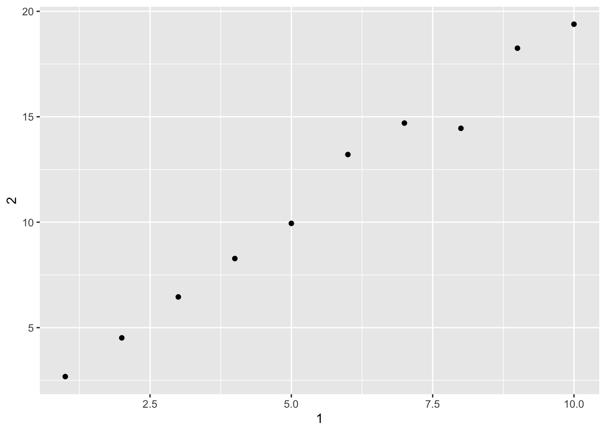

Tibbles are data frames, but they tweak some older behaviors to make life a little easier. Basically we can use the terms tibble and data frame interchangeably. Tibble is part of the tidyverse package:
library(tidyverse)
── Attaching core tidyverse packages ──────────────────────── tidyverse 2.0.0 ──
✔ dplyr 1.1.4 ✔ readr 2.1.5
✔ forcats 1.0.0 ✔ stringr 1.5.1
✔ ggplot2 3.5.2 ✔ tibble 3.3.0
✔ lubridate 1.9.4 ✔ tidyr 1.3.1
✔ purrr 1.1.0
── Conflicts ────────────────────────────────────────── tidyverse_conflicts() ──
✖ dplyr::filter() masks stats::filter()
✖ dplyr::lag() masks stats::lag()
ℹ Use the conflicted package (<http://conflicted.r-lib.org/>) to force all conflicts to become errors
# A tibble: 5 × 3
x y z
<int> <dbl> <dbl>
1 1 1 2
2 2 1 5
3 3 1 10
4 4 1 17
5 5 1 26
Tibble does much less than dataframes. It never changes types. It never changes names of variables, it never creates row names. Column names, which are not valid R variables names, are ok. They are called nonsyntatic names. They might start with a space:
# A tibble: 1 × 3
`:)` ` ` `2000`
<chr> <chr> <chr>
1 smile space number
Remember: We also need backticks, when working with these variables in other packages.
Tribbles
It is another tibble, called transposed tibble. It is customised for data entry in code. Headings start with ~ ; Hashtags describe data types:
tribble( ~x, ~y, ~z, #--|--|---- Note for making header more clear"a", 2, 3.6, "b", 1, 8.5 )
# A tibble: 2 × 3
x y z
<chr> <dbl> <dbl>
1 a 2 3.6
2 b 1 8.5
More Tibble Features
Tibbles are designed so that we don’t accidentally overwhelm the console by printing. Tibbles have a refined printing method for large datasets. Only show the first 10 rows, and columns as fititng on the screen.
tibble( a = lubridate::now() +runif(1e3) *86400, b = lubridate::today() +runif(1e3) *30, c =1:1e3, d =runif(1e3), e =sample(letters, 1e3, replace =TRUE) )
# A tibble: 1,000 × 5
a b c d e
<dttm> <date> <int> <dbl> <chr>
1 2025-08-25 11:19:53 2025-09-12 1 0.525 x
2 2025-08-24 23:35:22 2025-09-07 2 0.0634 d
3 2025-08-25 14:02:26 2025-09-17 3 0.0883 h
4 2025-08-25 01:35:08 2025-09-05 4 0.435 p
5 2025-08-25 10:35:29 2025-08-24 5 0.246 q
6 2025-08-25 12:44:49 2025-09-01 6 0.544 s
7 2025-08-25 07:03:01 2025-09-04 7 0.274 a
8 2025-08-25 14:55:44 2025-09-05 8 0.794 h
9 2025-08-24 23:24:58 2025-09-12 9 0.588 z
10 2025-08-25 20:15:47 2025-09-20 10 0.842 h
# ℹ 990 more rows
But we can still control all printing parameters ourselves
We can also set options, which work throughout the whole code:
options(tibble.print_max = n, tibble.print_min = m) # If more than m / noptions(dplyr.print_min =Inf) # Show all rowsoptions(tibble.width =Inf) # Show all columns
If you want a built-in data viewer option:
nycflights13::flights %>%View()
Use $, if you want to extract only one variable from a dataframe:
df <-tibble( x =runif(5), y =rnorm(5) ) # Extract by name df$x
2. Compare and contrast the following operations on a data.frame and equivalent tibble.
What is different? Why might the default data frame behaviors cause you frustration?
The $ operator will match any column name that starts with the name following it. Since there is a column named xyz, the expression df\(x will be expanded to df\)xyz. This behavior of the $ operator saves a few keystrokes, but it can result in accidentally using a different column than you thought you were using.
With data.frames, with [ the type of object that is returned differs on the number of columns. If it is one column, it won’t return a data.frame, but instead will return a vector. With more than one column, then it will return a data.frame. This is fine if you know what you are passing in, but suppose you did df[ , vars] where vars was a variable. Then what that code does depends on length(vars) and you’d have to write code to account for those situations or risk bugs.
df <-data.frame(abc =1, xyz ="a") df$x
[1] "a"
df[, "xyz"]
[1] "a"
df[, c("abc", "xyz")]
abc xyz
1 1 a
df <-tibble(abc =1, xyz ="a") df$x
Warning: Unknown or uninitialised column: `x`.
NULL
df[, "xyz"]
# A tibble: 1 × 1
xyz
<chr>
1 a
df[, c("abc", "xyz")]
# A tibble: 1 × 2
abc xyz
<dbl> <chr>
1 1 a
3. If you have the name of a variable stored in an object, e.g., var <- “mpg”.
How can you extract the reference variable from a tibble? You can use double brackets like df[[var]] . You can not use dollar signs. It would start searching for a column with that name.
4. Practice referring to nonsyntactic names in the following data frame by:
Extracting the variable called 1.
Plotting a scatterplot of 1 versus 2.
Creating a new column called 3, which is 2 divided by 1.
Renaming the columns to one, two, and three: annoying <-tibble( 1 = 1:10, 2 = 1 * 2 + rnorm(length(1)) )
annoying <-tibble( `1`=1:10, `2`=`1`*2+rnorm(length(`1`)) )annoying$`1`# a)
[1] 1 2 3 4 5 6 7 8 9 10
ggplot(annoying, aes(`1`, `2`)) +geom_point() # b)

annoying <-mutate(annoying, `3`=`2`/`1`)annoying <-rename(annoying, three =`3`, two =`2`, one =`1`)annoying
The function tibble::enframe() converts named vectors to a data frame with names and values
enframe(c(a =5, b =7))
# A tibble: 2 × 2
name value
<chr> <dbl>
1 a 5
2 b 7
6. What option controls how many additional column names are printed at the footer of a tibble?
The help page for the print() method of tibble objects is discussed in ?print.tbl. The n_extra argument determines the number of extra columns to print information for.